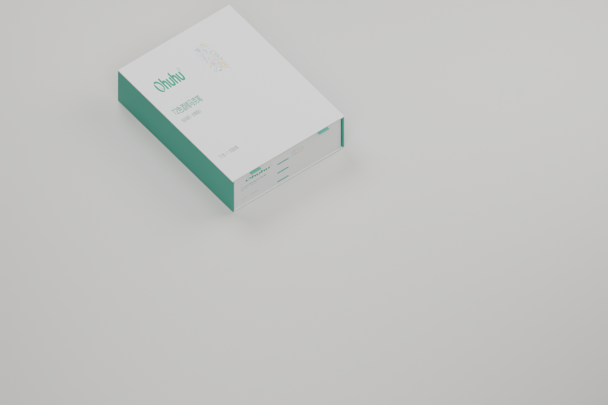
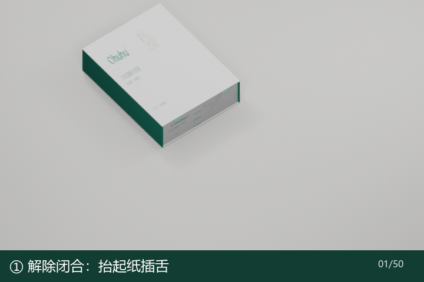

1. 结构怎么组成

纸外套
白色印刷纸面与绿色纸边组成抽拉外套。外套包住底盒，限制三只纸盘在携带时散开。
可抽出底盒
底盒承托中间纸盘，侧仓保留 1 支 Colorless Blender。底盒前沿的印刷挡板与底板连体，两个纸插舌只负责闭合，不在展开取笔时单独脱离。
三只纸盘
每盘为两排，每排 12 支，共 24 支。中间底盒两侧壁沿底部铰接并下翻，给左右纸盘抽出让路。左右小纸盘的两侧长边保持立起，不参与展开。上方挡板固定不下翻；右侧多余独立板不再设置；下方带印刷挡板继续与底盒连接。
2. 展开状态与取笔路径

按动图查看完整路径：解除闭合 → 先抽出中间底盒 → 中间底盒两侧壁下翻 → 左右小纸盘移出 → 小纸盘两侧保持立起并从上方取笔 → 按相反顺序收回。上方挡板保持固定，下方带印刷挡板始终连体。
中间纸盘作为工作区，不从底盒单独跑出。
中间底盒两侧壁沿底部铰链向外放平，给左右小纸盘抽出让路；小纸盘两侧保持立起。
左右纸盘沿各自方向移出；上方挡板保持固定，不需要放下。
带印刷的下挡板与底盒前沿连接，不单独脱离或漂浮，只负责防止笔向前滚落。
手从已放平的侧壁位置进入，托住笔身中段取出单支或整排。
3. 如何放回并合上
- 把左右纸盘的笔沿原方向放回槽位，确认没有笔横跨中隔或压住纸拉带。
- 把确认左右小纸盘两侧始终保持立起，确认侧挡卡入叠放路径；中间纸盘保持在底盒内。
- 把左右纸盘沿导向收回底盒两侧，再确认三盘回到叠放位置。
- 确认上方挡板仍与底盒连体、下方带印刷挡板没有脱离。
- 把底盒沿外套导向水平推回，推到前沿与外套齐平。
- 将两个纸插舌压入外套前边，确认插舌完全越过纸边后再携带。
4. 尺寸账本

这里保留结构计算草图作为尺寸来源索引；结构组成和取笔动作以第 1、2 部分为准，本部分只看尺寸之间的关系。
12 × 15 + 11 × 2 + 4 = 206 mm（单排纸托内净宽）
206 + 2 × 2 = 210 mm（纸托外宽）
150 + 2 × 1 + 2 × 2 = 156 mm（单排深度，含取放余量与纸壁）
5. 材料、装配与待验证
材料建议
外套优先灰板裱印刷纸；底盒和纸盘可用白卡/FBB 或折叠纸板。侧壁铰链处应保留连续纸纤维，避免开槽切断主受力带。
装配顺序
外套成型 → 底盒与连体挡板成型 → 中间侧壁纸铰链压折 → 装入纸盘和侧仓 → 粘贴纸拉带、低挡边与导向件 → 插舌闭锁 → 装笔并做抽拉检查。
待验证项目
需要白样确认板厚回弹、侧壁下翻 90° 的寿命、纸盘抽出间隙、挡板连接强度、插舌止退、倒置运输保持力和反复抽拉疲劳。
当前已通过同一模型检查 73 支数量、150 mm × Ø15 mm 尺寸、水平笔轴和 v13 静态展开关系；材料克重、裱合强度和量产公差仍需根据白样实测值回算。